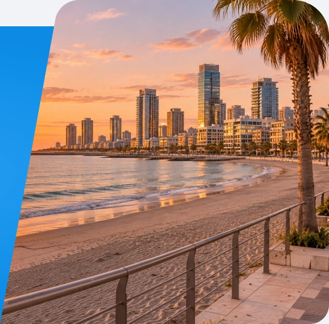
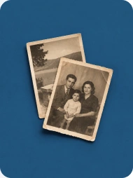

Директор офиса
на территории
Российской Федерации
5670+ выданных
израильских паспортов
Запишитесь на бесплатную 40-минутную консультацию
с нашим специалистом
5670+ выданных
израильских паспортов
Помощь в подготовке
к консульской проверке
Поэтапная оплата
с гарантией возврата
Доступ к закрытым
архивам
В 2026 году Репатриация в Израиль будет доступна лицам с еврейскими корнями до 3-го поколения и в некоторой степени способствовать их семьям.
До 2023 года действовала государственная программа репатриации в Израиле: она появилась из-за наплыва репатриантов в 2022 году и продолжила ускоренное оформление документов внутри страны, а получение гражданства Израиля в аэропорту слышали многие.
Согласно внешнему письму Министерства иностранных дел Израиля, программа репатриации в Израиле была закрыта 15 апреля 2023 года.
Сегодня репатриация возможна только в рамках Закона о возвращении, который регулирует получение гражданства и возвращение в Израиль лиц еврейского происхождения и членов их семей.
Соберём документы, подготовим заявление и сопроводим на всех этапах. Помощь в репатриации в Израиле полезна тем, кто хочет сэкономить ресурсы и сократить время на получение документов, подтверждающих право на репатриацию.
Поможем собрать документы и подготовить заявления. Заранее забронируем очередь в МВД Израиля на ваши даты.
Подготовимся к беседе с консулом и проведём переговоры с сотрудниками МВД. Сопровождаем во всех механизмах и уничтожаем все документы.
Чтобы не ждать документов, обратитесь к нам: мы решим проблему бюрократических вопросов, а наш курьер лично доставит документы на ваш адрес.
Поможем собрать все документы и подготовим все заявления. Заранее забронируем очереди в МВД Израиля под ваши даты.
Узнайте, какие этапы понадобятся
именно вашей семье
Репатриация в Израиль по Закону о возвращении применяется уже в течение многих лет, и это стоит того, чтобы люди стали гражданами Израиля.
Только в 2022 году из РФ переехало около 46 000 человек
Однако для большинства репатриантов камнем преткновения остаётся подтверждением еврейских корней — одного из принципиальных этапов репатриации.
Чаще всего документов не хватает: что‑то утеряно, связь с родственниками разорвана, архивы не выдают сведений.
Мы работаем с архивами и ЗАГСами, получаем архивные выписки, и сведения о родственниках в нескольких поколениях семьи и находим доказательства еврейского происхождения даже в самых сложных случаях.
Во многих случаях возможно положительное решение и при отсутствии части документов.
Не нашли свою ситуацию или сомневаетесь,
подходите ли под Закон о возвращении?

Центр репатриации «Шалом» поможет с ускоренной репатриацией в Израиль. Ниже приведены основные этапы оформления израильского гражданства и подготовки документов для репатриации.
Сбор и поиск документов — самый ответственный шаг: от него зависит весь процесс репатриации. При самостоятельном поиске часто возникают сложности с получением документов, поэтому мы берём поиск самостоятельно — от запроса в архивах и ЗАГСы до передачи вам оригиналов.
Особое внимание уделяем документам, подтверждающим еврейское происхождение по линии отца и матери: в ряде случаев использовались архивные выписки, сведения на основе данных и дополнительные доказательства родства.
Каждая ситуация индивидуальна: объём и сложность поиска зависят от имеющихся документов, количества поколений семьи, по которым необходимо восстановить родственные связи, и географии поиска. Исходя из нашего опыта, в среднем процесс архивного поиска занимает 3–5 месяцев, однако в отдельных случаях может потребоваться больше времени.
Сбор и поиск документов — самый ответственный шаг: от него зависит весь процесс репатриации. При самостоятельном поиске часто возникают сложности с получением документов, поэтому мы берём поиск самостоятельно — от запроса в архивах и ЗАГСы до передачи вам оригиналов.
Особое внимание уделяем документам, подтверждающим еврейское происхождение по линии отца и матери: в ряде случаев использовались архивные выписки, сведения на основе данных и дополнительные доказательства родства.
Каждая ситуация индивидуальна: объём и сложность поиска зависят от имеющихся документов, количества поколений семьи, по которым необходимо восстановить родственные связи, и географии поиска. Исходя из нашего опыта, в среднем процесс архивного поиска занимает 3–5 месяцев, однако в отдельных случаях может потребоваться больше времени.
Сбор и поиск документов — самый ответственный шаг: от него зависит весь процесс репатриации. При самостоятельном поиске часто возникают сложности с получением документов, поэтому мы берём поиск самостоятельно — от запроса в архивах и ЗАГСы до передачи вам оригиналов.
Особое внимание уделяем документам, подтверждающим еврейское происхождение по линии отца и матери: в ряде случаев использовались архивные выписки, сведения на основе данных и дополнительные доказательства родства.
Каждая ситуация индивидуальна: объём и сложность поиска зависят от имеющихся документов, количества поколений семьи, по которым необходимо восстановить родственные связи, и географии поиска. Исходя из нашего опыта, в среднем процесс архивного поиска занимает 3–5 месяцев, однако в отдельных случаях может потребоваться больше времени.
Сбор и поиск документов — самый ответственный шаг: от него зависит весь процесс репатриации. При самостоятельном поиске часто возникают сложности с получением документов, поэтому мы берём поиск самостоятельно — от запроса в архивах и ЗАГСы до передачи вам оригиналов.
Особое внимание уделяем документам, подтверждающим еврейское происхождение по линии отца и матери: в ряде случаев использовались архивные выписки, сведения на основе данных и дополнительные доказательства родства.
Каждая ситуация индивидуальна: объём и сложность поиска зависят от имеющихся документов, количества поколений семьи, по которым необходимо восстановить родственные связи, и географии поиска. Исходя из нашего опыта, в среднем процесс архивного поиска занимает 3–5 месяцев, однако в отдельных случаях может потребоваться больше времени.
Сбор и поиск документов — самый ответственный шаг: от него зависит весь процесс репатриации. При самостоятельном поиске часто возникают сложности с получением документов, поэтому мы берём поиск самостоятельно — от запроса в архивах и ЗАГСы до передачи вам оригиналов.
Особое внимание уделяем документам, подтверждающим еврейское происхождение по линии отца и матери: в ряде случаев использовались архивные выписки, сведения на основе данных и дополнительные доказательства родства.
Каждая ситуация индивидуальна: объём и сложность поиска зависят от имеющихся документов, количества поколений семьи, по которым необходимо восстановить родственные связи, и географии поиска. Исходя из нашего опыта, в среднем процесс архивного поиска занимает 3–5 месяцев, однако в отдельных случаях может потребоваться больше времени.
Чтобы вы не тратили время и бюджет на проживание, мы организуем очередь в первые дни после прилёта, заранее проверяем документы, ищем и восстанавливаем недостающие и готовим вас к консульской стороне.
Многие заявители задаются вопросом: какие документы необходимо подготовить перед вылетом. Ниже приведён основной перечень документов для репатриации:
Цветные фотографии всех мужчин, включая детей до 3 лет в семье, размером 3×4 см.
Загранпаспорта со сроком действия не менее 6 месяцев.
Оригиналы свидетельства о восприятии всех мужчин и семей их родителей.
Свидетельства о браке/браках и разводе — ваши, супруга(и) и предыдущие браки.
Свидетельства о закате, браке, разводе и смерти родителей, бабушек и дедушек.
Cправка об отсутствии судимости от всех членов семьи старше 14 лет.
Оригиналы трудовых книжек, национальных билетов и других документов об иной деятельности.
Аттестаты и дипломы об окончании высших учебных заведений.
Для несовершеннолетних — нотариально заверенное разрешение на вывоз в Израиль (если родители в разводе).
Все документы, подтверждающие ваше еврейство: информация, документы о смене фамилий, фотографии и т.д.
Для консульской проверки нужны оригиналы, некоторые — с переводом и апостилем. Если документов для подтверждения еврейства недостаточно, консул может запросить дополнительные сведения.
Иногда приходится выравнивать утерянные бумаги, поэтому мы рекомендуем заранее обратиться в Центр репатриации «Шалом»: готовим вас к собеседованию с консулом, ищем и восстанавливаем недостающие документы, взаимодействуем с госорганами и специалистами отдела репатриации и покровителями на каждом этапе получения гражданства.
Не уверены, что комплект документов полный?
Весной 2022 года поток желающих получить израильское гражданство резко вырос, и власти Израиля ввели упрощённую (ускоренную) процедуру репатриации.
Она позволяла пройти предварительную консульскую проверку дистанционно, ещё до приезда в страну. При положительном решении заявитель мог получить билеты в Израиль при содействии Еврейского агентства «Сохнут», прибыть в страну в качестве туриста и уже на месте оформить статус нового репатрианта.
Она позволяла пройти предварительную консульскую проверку дистанционно, ещё до приезда в страну. При положительном решении заявитель мог получить билеты в Израиль при содействии Еврейского агентства «Сохнут», прибыть в страну в качестве туриста и уже на месте оформить статус нового репатрианта.
В 2026 году она называется «Смена требования с туриста на репатрианта».
Важно понимать, что смена статуса не гарантирует получение израильского гражданства. Заявителю в любом случае необходимо подтвердить право на репатриацию в соответствии с Законом о возвращении и успешно пройти все предусмотренные проверки.
Оставляете онлайн-заявку на предварительную консульскую проверку.
Получаете билеты от «Сохнута» и прилетаете туристом.
В аэропорту обращаетесь к консулу в представительстве Натива, и после первого подтверждения права на репатриацию предоставляется документ с предварительным указанием номера.
Записывается на консульскую проверку представителям Нативы в Министерстве алии и продвигается через приложение «Мой визит» и проходит её.
Получаете в МВД временное удостоверение личности.
Регистрируется в Министерстве иностранных дел и представителей в качестве нового репатрианта.
Прилетаете в Израиль по рабочей или туристической визе.
Подаёте обращение по смене причины с «туриста» на «нового репатрианта» в визовом отделе МВД Израиля по городу проживания.
Записываетесь в МВД через приложение «Мой визит» и ждёте ответа с датой подачи документов.
Приходите в МВД в назначенный день с полным комплектом документов.
Заполняете анкету и проходите собеседование с консулом.
После успешной консульской проверки в МВД остались документы нового репатрианта.
Регистрируется в Министерстве иностранных дел и представителей в качестве нового репатрианта.
Узнайте о процессах обжалования, внутренней апелляции, повторной подаче и судебных делах, с примерами реальных случаев и юридическими нюансами.
Как доказать еврейские корни, и кто действительно имеет право на репатриацию в Израиль?
На все вопросы отвечают адвокаты центра репатриации «Шалом» на нашем канале
Самый быстрый способ получить гражданство Израиля — качественная подготовка и чёткий план действий с учётом ситуации в вашей семье. Каждый год процесс репатриации в Израиль меняется: создаются новые правила и условия репатриации в Израиль, меняется порядок оформления документов.
Мы в курсе всех изменений и сопровождаем клиентов на всех этапах репатриации. Репатриация в Израиль 2026 г. — шаг, к которому нужно подготовиться тщательно.

Отсутствие документально подтверждённого родства между заявителем и указанным лицом
Запросы дополнительных материалов, данных по делу, направленные консульскими учреждениями Государства Израиль
Подтверждение еврейского происхождения и права на репатриацию через судебное разбирательство в Израиле
Отказ в выдаче оригинальных / повторных / восстановленных документов органов ЗАГС / архивных учреждений и ведомств
Нет документов, был отказ
или ситуация нестандартная?
После завершения процедуры репатриации и получения израильского гражданства начинается новый этап — адаптация к жизни в стране. Государство предоставляет новым репатриантам различные меры поддержки:
Финансовые выплаты, налоговые льготы
Поддержка в сфере образования и жилья
Бесплатные курсы иврита (ульпан)
Помощь с трудоустройством
Среди возможностей для новых репатриантов — программы «Первый дом на родине» и «Ульпан-кибуц», которые помогают освоиться в Израиле, изучить язык и познакомиться с жизнью страны.
Специалисты Центра репатриации «Шалом» знают, с какими вопросами и трудностями сталкиваются люди при переезде, и помогают разобраться не только в процедуре получения гражданства, но и в дальнейших шагах после прибытия в Израиль.
Свяжитесь с нами или запишитесь на бесплатную консультацию. Мы ответим на ваши вопросы о репатриации, доступных программах поддержки и наших услугах.
Более 15 000 участников. Самое большое русскоязычное комьюнити в рунете.
Самой популярной программой является репатриация в Израиль по Закону о возвращении. Программа для людей с еврейскими корнями, которые хотят вернуться на историческую родину.
Самой популярной программой является репатриация в Израиль по Закону о возвращении. Программа для людей с еврейскими корнями, которые хотят вернуться на историческую родину.
Самой популярной программой является репатриация в Израиль по Закону о возвращении. Программа для людей с еврейскими корнями, которые хотят вернуться на историческую родину.
Самой популярной программой является репатриация в Израиль по Закону о возвращении. Программа для людей с еврейскими корнями, которые хотят вернуться на историческую родину.
Самой популярной программой является репатриация в Израиль по Закону о возвращении. Программа для людей с еврейскими корнями, которые хотят вернуться на историческую родину.
Самой популярной программой является репатриация в Израиль по Закону о возвращении. Программа для людей с еврейскими корнями, которые хотят вернуться на историческую родину.
Самой популярной программой является репатриация в Израиль по Закону о возвращении. Программа для людей с еврейскими корнями, которые хотят вернуться на историческую родину.